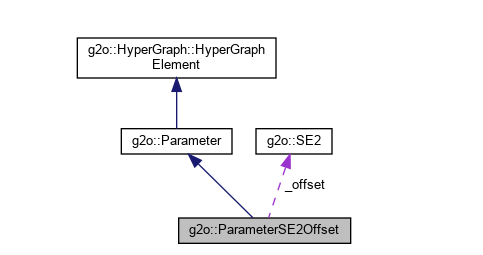
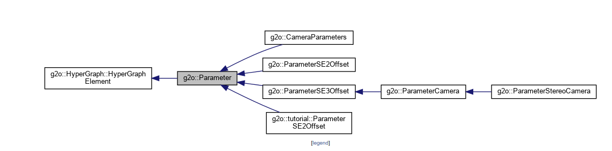
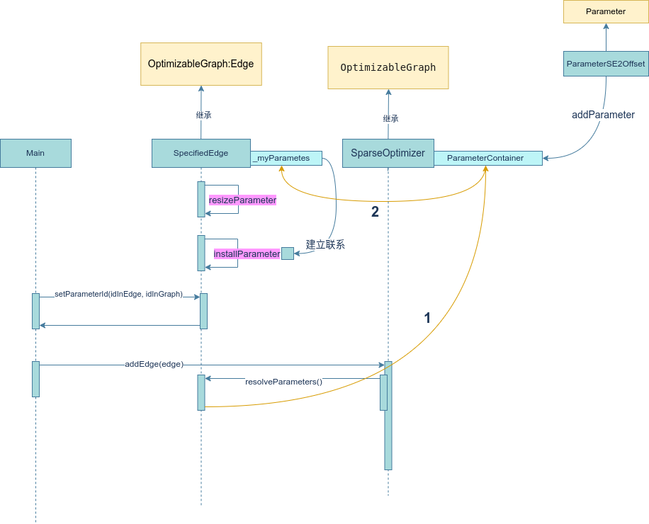

G2O - g2o中parameter的使用
parameter基础概念
在g2o中，parameter是一个抽象类，它的作用是为了在优化过程中，保存某些固定值的量。这些固定量可能需要被多条边用来计算误差。为了避免重复存储，g2o中使用parameter来存储这些固定量，不同的边通过指针指向这些parameter，避免拷贝和重复存储。实际上在计算图中存储的是指针：parameter*，Edge也是通过parameter**来指向这些指针。parameter需要在外部声明并初始化，然后通过指针传递到Optimizer中
parameter在优化器中的存储
为了避免重复存储，g2o在parameter以指针的形式保存在OptimizatbleGraph中，
parameter在计算图中的实际存储位置是在OptimizableGraph::_parameters中，它是一个ParameterContainer类型的容器，ParameterContainer是一个std::map<int, Parameter*>类型的容器，其中int是parameter的id，Parameter*是parameter的指针。
添加parameter
Parameter基类
parameter基类定义在头文件g2o/core/parameter.h中，它是一个抽象类，定义了id成员变量，以及read和write两个虚函数。
parameter基类定义很简单，主要是用来提供一个接口。具体的使用是靠Edge内部将获取到的parameter指针进行强制类型转换，然后调用具体子类的成员变量或者方法来操作具体的参数
1 | // Parameter基类 |
实现一个parameter
实现一个parameter需要继承parameter基类，并实现read和write两个虚函数。
但由于Parameter基类中并没有实际存储数据的成员变量，所以一般还需要自己添加一些成员变量以及一些实用的成员函数。下面是一个例子，保存了一个SE2类型的变量和其逆变换：
1 |
|
g2o中已经实现了一些常用的parameter，例如g2o/types/slam2d/parameter_se2_offset.h中的ParameterSE2Offset，它保存了一个SE2类型的变量和其逆变换。

还有一些其他常用的parameter

添加parameter到优化器
在优化器中添加parameter需要调用OptimizableGraph::addParameter方法，该方法会将parameter添加到OptimizableGraph::_parameters中。 注意，Parameter基类有一个id成员变量，在构造Parameter的时候需要调用setId方法来设置id
1 |
|
parameter在边中的使用
这部分的内容文档比较少，只能通过看源码来理解注册到Graph中的parameter是如何被Edge使用的。
主要的接口有几个：
Edge::resizeParameters(int newSize)：调整Edge中parameter的数量。Edge内部也维护了一个vector<parameter**>Edge::installParameter(SpecificParameterType* parameter, int argNum)：将parameter注册到Edge中，argNum表示parameter在Edge中的第几个参数，从0开始计数。这个函数只是将某一个parameter的指针注册到Edge中，这个时候Edge中的parameter还没有实际的值，只是一个指针。Edge::setParameterId(int argNum, int paramId)：将Edge中第argNum个parameter与Graph中的parameter（id）建立联系- 当将Edge添加到Graph中时，Graph会调用
Edge::resolveParameters()方法，该方法会将Edge中的parameter指针指向Graph中的parameter，这样Edge中的parameter就有了实际的值。
具体的过程总结过下面这幅图：

Edge中的代码如下
1 | // EdgeSE2.h |
Main中的代码如下
1 | int main() { |